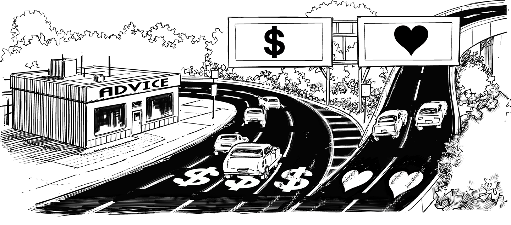
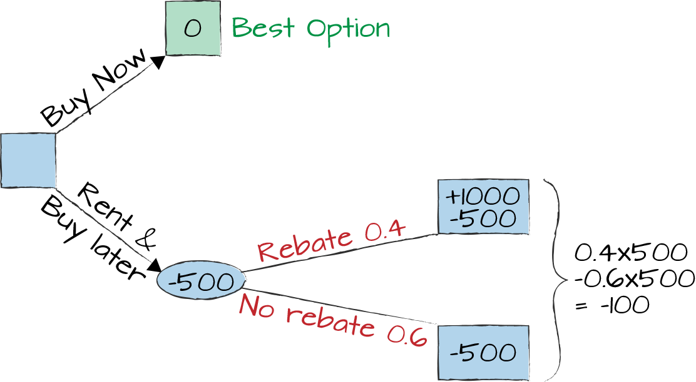
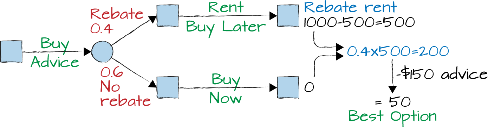

Deciding Not to Decide Is a Decision

You buy a lottery ticket and win. What a fantastic decision! You cross the road at night, on red, on a busy street, slightly intoxicated, and with your eyes closed, and arrive safely on the other side. Also a good decision? Doesn’t sound like it. But what’s the difference? Both decisions had positive outcomes. In the latter case, though, we judge by the risk involved while in the former we focus on the outcome, ignoring the ticket price and the (usually low) odds of winning. However, you can’t judge a decision by the outcome alone, simply because you didn’t know the outcome when you made the decision.
Here’s another exercise: in front of you is a very large jar. It contains 1,000,000 pills. They all look the same, are all tasteless, and benign—except one, which will kill you instantly and painlessly. How much money does someone have to pay you to take a pill from this jar? Most people will answer 1 million dollars, 10 million dollars, or straight-out refuse. However, the same people are quite willing to cross the road on a red light (with their eyes open), which carries the same risk as swallowing a couple of pills. It’d be difficult to argue that the 30 seconds you saved by crossing on red would have earned you the equivalent of a few million dollars.
Humans are terrible decisions makers, especially when small probabilities and grave outcomes like death are involved. Kahneman’s book Thinking, Fast and Slow1 shows so many examples of how our brain can be tricked, it can make you wonder how humanity could get this far despite being such terrible decision makers. I guess we had a lot of tries.
Making decisions is a critical part of an enterprise-scale architect’s job. Being a good architect therefore warrants a conscious effort to becoming a better decision maker.
Contrived examples make erratic or illogical behavior quite apparent. But when faced with complex business decisions, poor decision-making discipline often isn’t as obvious.
I attended weekly operations meetings that labeled weeks “good” or “bad” based on the number of critical infrastructure outages. I relabeled those weeks as “lucky” because lowering the number and severity of incidents in the long run is the real metric to observe.
Hoping for a week with fewer outages is the corporate IT equivalent of the (flawed) roulette strategy of “after five times black it’s gotta be red!” My shocker version of highlighting such flawed thinking consists of a (fictitious) sequence of events during Russian Roulette: “click—I am a genius!—boom.” Kahneman calls this “The law of small numbers”; people tend to jump to conclusions based on sample sizes that are way too small to be significant. For example, zero outages in a week are no cause for celebration in a large enterprise.
Google’s mobile ads team used rigid metrics for A/B testing experiments that affected ad appearance or selection. The dashboard included metrics to check click-through rates (more clicks = more money) but also to understand whether ads distract from the search results (users come for search, not ads). Each metric’s confidence interval represented the range that 95% of sample sets would randomly fall into. If your experiment’s improvement landed inside the confidence interval, you’d need to extend the experiment to get valid data before implementing the suggested change (for normal distributions, the confidence interval narrows with the square root of the number of sample points).
Alas, not all data leads to better decisions. When selecting a product, IT often compiles extensive requirement lists that are summed up into scores. However, when you pick the “winner” with a score of 82.1 over the “loser” with 79.8, it would be challenging to prove the statistical significance of this decision.
Still, numeric scores might be better than traffic light comparison tables that rate each attribute as “green,” “yellow,” or “red.” A product might get “green” for allowing time travel but “red” for requiring planned downtime. Although this might make it look roughly equivalent to one with the opposite properties, I know which one I’d prefer.
Traditional IT organizations often reverse engineer score charts from a specific outcome so that they have data to back up their preference.
Sadly, such comparison charts are reverse engineered from a preferred outcome. Others are designed to protect the status quo by demanding quirks only present in existing products.
I have seen IT requirements analogous to demanding that a new car must rattle at 60 mph and have a squeaky door so that it can appropriately replace the existing one.
Kahneman’s book lists many ways in which our thinking is biased. For example, confirmation bias describes our tendency to interpret data in such a way that it supports our own hypotheses. The Google Ad dashboard was designed to overcome this bias.
Another well-known bias is prospect theory: when faced with an opportunity, people tend to favor a smaller but guaranteed gain over the uncertain chance for a larger one: “A sparrow in the hand is better than the pigeon on the roof.” When it comes to taking a loss, however, people are likely to take a (long) shot at avoiding the penalty over coughing up a smaller amount for sure. We tend to “feel lucky” when we can hope to escape a negative event, an effect called loss aversion.
You have likely seen project managers avoid the certain loss in short-term velocity for performing a major refactoring because the payoff in system stability or sustained velocity is uncertain.
The following scenario shows how loss aversion tricks us into making irrational decisions. When you offer someone a coin toss that makes them pay $100 on heads but gives them $120 on tails, the expected return of taking the gamble is $10 (0.5 × –$100 + 0.5 × $120)—easy money. However, most people will kindly decline due to their loss aversion. Losing $100 to them feels worse than the chance to gain $120. Most people will only accept the offer when the payout is between $150 and $200.
Another phenomenon, priming, can influence decisions based on recent data we received. In the extreme case, when faced with enormous uncertainty, it can make us pick a number we recently heard or saw even if it’s totally unrelated. This effect plays a role when many people answer one million dollars when faced with the one-million-pills example.
Priming is routinely used in retail scenarios. When you go to buy a piece of clothing—let’s say a sweater—the store clerk is almost guaranteed to first show you something expensive, even outside your price range. A sweater for $399? It’s made from cashmere and feels very soft and comfortable; tempting, but it’s simply too expensive. But the almost-as-nice sweater for $199 seems a reasonable compromise, and you’ll happily buy it. Next door, decent sweaters can be had for $59. You fell victim to priming, setting a context that influences your decision. Priming can even make you walk more slowly if your mindset is on elderly people.2
William Poundstone’s book Priceless: The Myth of Fair Value3 shows that products that no one actually buys can shift purchasing behavior significantly, thanks to priming. When presented with a choice between a “premium” beer for $2.60 and a “bargain” one for $1.80, about two thirds of test subjects (students) chose the premium beer. Adding a third, “super-premium” beer for a whopping $3.40 shifted student’s desire so that 90% ordered the premium beer and 10% the super-premium.
If we are such horrible decision makers, what can we do to get better at it? Understanding these pitfalls can help you avoid or at least compensate for them. However, mathematics can also help.
One of the most interesting classes that I took at Stanford was Ron Howard’s class on decision analysis, which was entertaining, thought provoking, and challenging. Decision analysis helps us think rationally about our earlier jar-with-pills example. A one-in-one-million chance of dying is called one micromort. Taking one pill from the jar amounts to being exposed to exactly one micromort. The amount you are willing to pay to avoid this risk is called your micromort value. Micromorts help us reason about decisions with small probabilities but very serious outcomes, such as deciding whether to undergo surgery that eliminates lifelong pain but fails with a 1% probability, resulting in immediate death.
To calibrate the micromort value, it helps to consider the risks of different life activities: a day of skiing clocks in at between one and nine micromorts, whereas motor vehicle accidents amount to about 0.5 per day. So a ski trip can run you some five micromorts—the same as swallowing five pills. Is it worth it? You’d need to compare the enjoyment value you derive from skiing against the trip’s cash expense plus the “cost” of the micromort risk you are taking.
So how much should you demand to take one pill? Most people’s micromort value lies between $1 and $20. Assuming a prototypical value of $10, the ski trip that might cost you $100 in gas and lift tickets costs you an extra $50 in risk of death. You should therefore decide whether a day in the mountains is worth $150 to you. This also shows why a micromort value of $1,000,000 makes little sense: you’d hardly be willing to pay $5,000,100 for a one-day ski trip unless you are filthy rich! Lastly, the model helps you judge whether buying a helmet for $100 is a worthwhile investment for you if it reduces the risk of death in half.
The micromort value isn’t the same for all people. It goes up with income (or rather, consumption) and goes down with age. This is to be expected as the monetary value you assign to your remaining life increases with your income. A wealthy person should easily decide to buy a $100 helmet, whereas a person who is struggling to make ends meet is more likely to accept the risk. As you age, the likelihood of death from natural causes unstoppably increases until it reaches about 100,000 micromorts annually, or almost 300 per day, by the age of 80. At that point, the value derived from buying a risk reduction of two micromorts is rather small.
Luckily, Ron Howard and Ali Abbas have captured the mathematics of decision making in their book Foundations of Decision Analysis.4 The book isn’t cheap, though, listing at around $200. Should you buy a book for $200 that could make you a better decision maker? Think about it…
Decision models can go a long way toward making us better decision makers. Thanks to George Box, it’s well known that “all models are wrong, but some are useful.”5 So, don’t dismiss a model just because it makes simplifying assumptions. It’s likely to help you make a much better decision than your gut. The best overview of models and their application I have come across is Scott Page’s Coursera course on Model Thinking. He also recently published the content in his book The Model Thinker.6
Decision trees are very simple models that help us make more rational decisions (see Figure 6-1). Suppose that you want to buy a car, but there’s a 40% chance that the dealer will offer a $1,000 cash-back promotion starting next month. You need a car now, so if you defer the purchase, you’ll need to rent a car for $500 for the coming month, even if the rebate doesn’t come through. What should you do? If you buy now, you’ll pay the list price, which we calibrate to $0 for simplicity’s sake. If you rent first, you are down by $500 with a 40% chance to gain $1,000, so the expected value is 0.4 × $1,000 – $500 = –$100, lower than the list price. You should buy the car now.

Let’s make the scenario a bit more interesting: assume that an insider offers to tell you whether the cash-back promotion happens next month or not. He asks $150 for this information. Should you buy it? Having this information, your new decision tree (see Figure 6-2) would allow you to buy now if you’re told that there’s no cash back (in 60% of cases) and to buy later if there is (in 40% of cases). Having information up front increases the expected value to 0.6 × 0 + 0.4 × (1,000 – 500) = $200. As your current best scenario (i.e., buying now) yielded a value of $0, it’s worth paying $150 for the extra information.

How do you know that the chance of the cashback is exactly 40%? You don’t. But using the model helps you reason in face of uncertainty. You can rerun the model for a 50% likelihood and see whether your decision changes.
Deadly pills, premium beers, and car dealer rebates—how do we bring our learnings back to IT decision making? Many IT decisions—especially those related to cybersecurity risks or system outages—share similar characteristics of small probability but severe downsides. Therefore, separating likelihood from impact and baselining probabilities can help remove emotion, resulting in more rational decisions. Maybe you even find it useful to define a concept of microfail for your systems: a one-in-a-million chance of a catastrophic system failure.
A classic case for decision making is system uptime. Suppose that a single server can achieve 99.5% availability, meaning that 99.5% of the time it will be available to your application’s users. This means that over the course of an average month, which has 730 hours, the system can be “down” for 730 / 200 = 3.65 hours. That’s not horrible, but also not great. 99.9% is generally considered a good uptime—the allowed downtime would be less than roughly 45 minutes per month. However, to achieve this, you generally need redundant hardware, meaning that you need a second set of servers ready to go in case your primary server fails. This will double your hardware cost, often require additional failover machinery, and in some cases also double your software license cost. Are three hours downtime less per month worth double the cost? Sounds like a perfect case for decision analysis!
With all this science behind decision making, what’s the best decision? It’s the one that you don’t need to take! That’s what Martin Fowler indicated when he observed that “one of an architect’s most important tasks is to eliminate irreversibility in software designs.”7 Those are the decisions that don’t need to be made or can be made quickly because they can be easily changed later thanks to you having built-in options (Chapter 9). In a well-designed software system, decisions aren’t as final as when taking deadly pills from a jar.
1 Daniel Kahneman, Thinking, Fast and Slow (New York: Farrar, Straus and Giroux, 2013).
2 John A. Bargh, Mark Chen, and Lara Burrows, “Automaticity of Social Behavior,” Journal of Personality and Social Psychology 71, no. 2 (Aug. 1996): 230-244.
3 William Poundstone, Priceless: The Myth of Fair Value (New York: Hill and Wang, 2011).
4 Ronald A. Howard and Ali E. Abbas, Foundations of Decision Analysis (Prentice Hall, 2015).
5 George Box, “Science and Statistics,” Journal of the American Statistical Association (1976).
6 Scott E. Page, The Model Thinker: What You Need to Know to Make Data Work for You (New York: Basic Books, 2018).
7 Martin Fowler, “Who Needs an Architect?,” IEEE Software, July/August 2003, https://oreil.ly/djeuH.